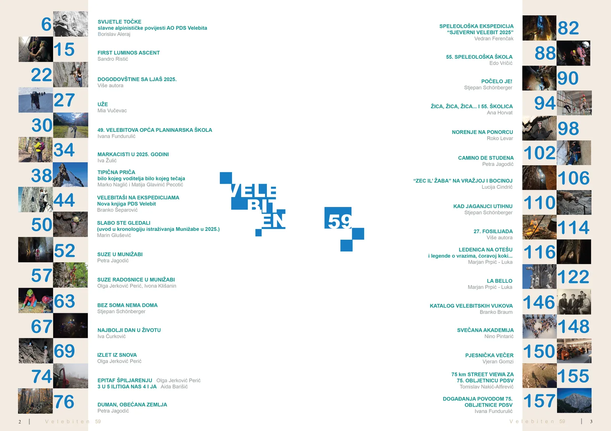

Novi Velebiten!
Novi broj našeg časopisa Velebiten je tu! Pregršt priča iz planinarstva, visokogorstva, speleologije, putopisa i punom vrećom prekrasnih fotografija

Ivor Janković, urednik
Drage velebitašice, dragi velebitaši, dragi svi čitatelji našeg dragog časopisa,
Prođe vrijeme, dođe rok – Velebiten nam opet stiže, skok na skok. Kao i svake godine, razdoblje zimskog sna bit će nam ljepše ako se ušuškamo uz vatru (logorsku, kućnu ili onu po vlastitim mogućnostima i preferencijama), s čašicom ___________(ubaciti željeni napitak) u jednoj, a novim brojem Velebitena u drugoj ruci.
Osim duge tradicije našeg časopisa, čini mi se da tradicija postaje i to da su posljednjih godina brojevi puni različitih obljetnica (za mlađe članove – trk do našeg knjižničara po ranije brojeve). Prošlim izdanjem obilježili smo 150 godina organiziranog planinarstva u Hrvatskoj, godinu ranije 70. obljetnicu osvajanja Mount Everesta, a 2022. pisali smo o stotoj obljetnici istraživanja Jame kod Rašpora (usput, upravo je izdana predivna monografija posvećena tom speleološkom objektu). Još godinu ranije podsjetili smo se osnutka Planinske satnije Velebit te prve hrvatske alpinističke ekspedicije Greenland 1971. To je tek mali dio obljetnica koje smo s razlogom obilježili u Velebitenu – i to s dobrim razlogom, jer pokazuju da naše društvo i naši Velebitaši imaju ključnu ulogu u mnogim istraživanjima i događajima svjetskog značaja.
A tako je i danas. No ovaj broj posebno je svečan, i to ne samo za jedan od naših vrijednih odsjeka, nego za čitavo društvo. Ove godine slavimo 75 godina od osnutka našeg društva! Naša pročelnica već od početka godine (a zapravo i prije) svojom palicom daje ritam brojnim događajima kojima obilježavamo ovaj, usuđujem se reći, i za širu zajednicu važan jubilej. Nema mnogo 75-godišnjaka koji i dalje radosno skakuću po planinskim vrhovima, uvlače se u uske špiljske meandre, smrzavaju u već ofucanim vrećama na minusima i pritom uživaju u svim drugim veselim aktivnostima koje naš 75-godišnji tinejdžer svakodnevno provodi. (Iako, naši „Fosili“ i dalje slave s nama na tradicionalnim Fosilijadama – ove godine već 27. put!) Upravo tim našim „Velebitskim vukovima“ (za tekst istoimene pjesme – javite se Edi) posvetili smo dio ovog broja, podsjetivši se na njih riječima i slikama. Što je društvo starije, čini se da nam je onaj svima poznati velebitaški duh sve mlađi. Zato – neka nam je sretna ova 75.! Ako moji (Rožanski) kukovi izdrže, obećajem da ću se dogegati do društva i na stotu obljetnicu.
No do tada – Velebiten u ruke. I ove godine bili smo izuzetno aktivni. Kao najvažnije, treba istaknuti kontinuiranu izobrazbu novih velebitašica i velebitaša (jer kako drukčije doživjeti stotu?) kroz školice naših odsjeka. Iako su svi voditelji i voditeljice škola svoje dužnosti shvatili vrlo ozbiljno te nam s lakoćom „isporučili“ nove speleologe, alpiniste, planinare i visokogorce. Čini mi se da ih ponekad nije lako nagovoriti da svoje uspjehe pretoče iz djela u riječi. No, uz metodu mrkve i batine, i ovaj broj donosi štorije o dogodovštinama školaraca i instruktora – koje ćemo čitati sada, ali i ponovno, kad mnogi od nas zaborave i što su tog dana doručkovali. Računam, negdje oko 100. obljetnice društva.
Upravo taj dokument trenutka, taj presjek sadašnjosti Velebita, važan je i predivan zalog za budućnost. Osim obljetničkih tekstova i osvrta na školice, u ovom broju možete uživati i u prikazima raznih istraživanja i rekognosciranja te u raznim putešestvijama (Munižaba – kojoj je posvećeno više tekstova, Duman, Ledenica, talijanska avantura), kao i u izvještaju s već tradicionalne ekspedicije Sjeverni Velebit.
U svoje osobno ime, velika hvala glavnom grafičkom i tehničkom uredniku Marjanu Prpiću – Luki. Bez njega bi Velebiten, ako bi uopće ugledao svjetlo dana, možda bio nalik prvim brojevima – crno-bijelim, umnoženim na fotokopirnom stroju – a ne ovako divno uređenom i dizajniranom izdanju. No čak i u takvim okolnostima, kao u prvim godinama časopisa, tekstovi i prilozi bili bi jednako sjajni!
Zato velika hvala svim autorima tekstova, predivnih fotografija te sudionicima svih aktivnosti koji naše društvo čine onakvima kakvo jest. Hvala svima koji su pomogli da ovaj obljetnički broj izgleda upravo ovako – raznoliko, posebno i predivno, baš kao i naše društvo.
A sada – na čitanje!
Velebiten 59_ sadržaj